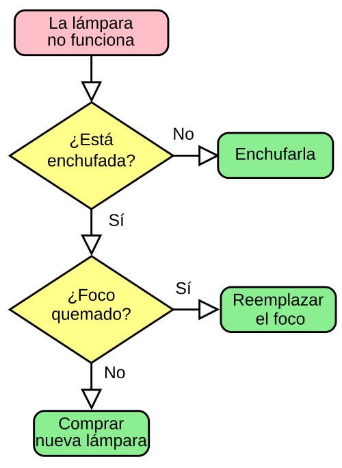
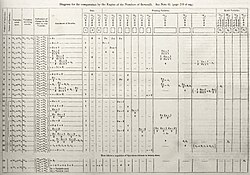

Los diagramas de flujo sirven para representar algoritmos de manera gráfica.
Definición de Algoritmo
En matemáticas, lógica, computación y disciplinas relacionadas, un algoritmo es un conjunto de instrucciones o reglas definidas y no ambiguas, ordenadas y finitas que permite, típicamente, solucionar un problema, realizar un cómputo, procesar datos y llevar a cabo otras tareas o actividades. Dados un estado inicial y una entrada, siguiendo los pasos sucesivos se llega a un estado final y se obtiene una solución.
Características y Estados
Un algoritmo debe cumplir con requisitos específicos para ser considerado válido dentro de las ciencias de la computación. Debe ser preciso, indicando el orden de realización de cada paso sin dejar lugar a dudas. Debe estar definido, lo que significa que si se sigue el mismo algoritmo varias veces con la misma entrada, se debe obtener siempre el mismo resultado. Además, debe ser finito, terminando en un tiempo determinado tras un número contado de acciones.
En todo proceso algorítmico se distinguen tres partes fundamentales. La entrada o input consiste en los datos iniciales necesarios para operar. El proceso abarca el conjunto de operaciones y transformaciones aplicadas a esos datos. Finalmente, la salida u output representa el resultado final entregado al usuario o sistema. Esta estructura permite que cualquier problema complejo se descomponga en partes manejables y lógicas.

Diagrama de Ada Lovelace de la «nota G», el primer algoritmo informático publicado.
Proceso Lógico y Secuencias
La ejecución de un algoritmo implica transitar por una serie de estados. Mientras se evalúa una secuencia de datos, el sistema podrá leer e interpretar señales. Por ejemplo, en un sistema de conteo, se puede definir una señal positiva en el caso de que la cantidad de ceros sea mayor que la de unos, y una señal negativa en el caso contrario.
Finalmente, la salida de este tipo de algoritmos se define como la devolución de valores exclusivamente positivos si se cumple la condición mayoritaria de la secuencia y, en cualquier otro caso, devolverá una mezcla de señales positivas y negativas. Este comportamiento demuestra cómo los algoritmos pueden tomar decisiones basadas en comparaciones simples de datos de entrada.
Ejemplo: Encontrar el máximo de un conjunto
Este problema consiste en encontrar el número más grande dentro de una lista finita. Es un ejemplo fundamental para entender cómo una computadora recorre una estructura de datos y utiliza variables auxiliares para almacenar resultados temporales.
Descripción de alto nivel
Dado un conjunto finito de números, se busca identificar cuál es el mayor de todos. Para ello, se establece una estrategia de comparación secuencial. No importa el tamaño del conjunto, siempre que sea finito, el algoritmo podrá determinar el valor máximo tras compararlos todos uno por uno contra una referencia que se actualiza constantemente.
Lógica de pasos detallada
El proceso comienza asumiendo que el primer número de la lista (posición cero) es el más grande hasta el momento. A continuación, se inicia un recorrido desde el segundo elemento hasta el último. En cada paso, se compara el elemento actual con el valor máximo guardado. Si el elemento actual resulta ser mayor, el valor máximo guardado se reemplaza por este nuevo número.
Al terminar de recorrer toda la lista, la variable que contenía el máximo temporal se convierte en el resultado final del algoritmo. Esta lógica se puede implementar en diversos lenguajes de programación utilizando ciclos y condicionales simples, permitiendo resolver el problema con una eficiencia que depende directamente del número de elementos presentes en el conjunto inicial.

ilustración animada del proceso de un algoritmo de ordenación de números.
Técnicas de diseño de algoritmos
Existen diversos enfoques para resolver problemas mediante algoritmos, cada uno adaptado a la eficiencia que se requiera:
- Algoritmos voraces: seleccionan los elementos más prometedores en cada paso para encontrar una solución rápida.
- Algoritmos paralelos: dividen el problema en subproblemas que se ejecutan de forma simultánea en varios procesadores.
- Algoritmos probabilísticos: utilizan valores aleatorios o pseudoaleatorios para determinar algunos de sus pasos.
- Algoritmos determinísticos: tienen un comportamiento lineal donde cada paso tiene un único sucesor predefinido.
- Divide y vencerás: fragmentan un problema en subconjuntos disjuntos para resolverlos por separado y luego unirlos.
- Metaheurísticas: encuentran soluciones aproximadas basándose en la experiencia o conocimiento anterior del problema.
- Programación dinámica: resuelve problemas complejos almacenando resultados de subproblemas para evitar cálculos repetidos.
- Vuelta atrás: examina un espacio de soluciones en forma de árbol y retrocede cuando una rama no conduce al éxito.
Temas de Complejidad y Disciplinas
El análisis de algoritmos permite medir los recursos necesarios, como el tiempo de ejecución y el espacio en memoria. Se utilizan conceptos como la complejidad computacional para entender qué tan escalable es una solución.
Las disciplinas vinculadas incluyen las ciencias de la computación, la inteligencia artificial, la investigación operativa y la programación. La Máquina de Turing, un concepto clave en la informática teórica, sirve como modelo para entender los límites de lo que un algoritmo puede computar.